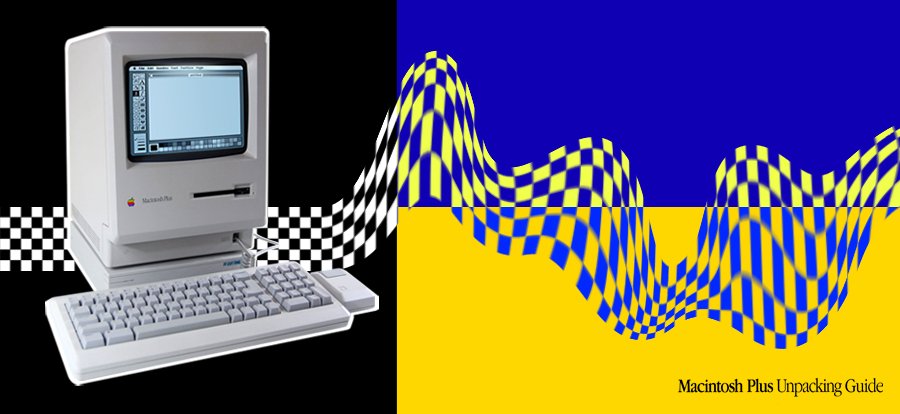

| Historia | A Apple | Netinho Sooares | |
|  | |
/////////// MACINTOSH PLUSO computador Macintosh Plus foi o terceiro modelo da linha Macintosh. Foi introduzido a 16 de janeiro de 1986, dois anos após o Macintosh original e um pouco mais de um ano depois do Macintosh 512K, com um preço de cerca de 2599 dólares. Macintosh 128K é um computador produzido pela Apple Inc. e lançado em 24 de janeiro de 1984. Vinha com 128 kB de memória - daí deriva seu nome, e rodava o System 1. Tinha tela preta e branca e mouse com um só botão - que foi o padrão de computadores Apple durante muito tempo. Ele recebeu uma atualização, "System 1.1" em 29 de dezembro de 1984, antes de ser sucedido pelo System 2. O lançamento do primeiro 'Macintosh', que tem o nome originado de um tipo de maçã (a mais apreciada pelos estadunidenses), aconteceu em 24 de janeiro de 1984 com um comercial intitulado '1984' que fazia uma relação com o livro de mesmo nome. O comercial foi o mais caro comercial já produzido até então e teve uma única exibição: durante um intervalo do Superbowl. As vendas do Macintosh foram fortes desde seu lançamento inicial em 24 de janeiro de 1984 e atingiram 70 mil unidades em 3 de maio de 1984. |
|
|
|
|